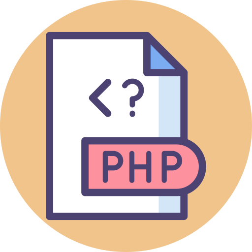

C#, PHP, JS

Python

SQL

Tijdens de opleiding tot Software Developer werk je regelmatig in teamverband. Je leert de organisatie van projecten voor de ontwikkeling van applicaties en houdt constant de functionaliteit van je apps en software in de gaten. In het eerste jaar leg je vooral de basis van programmeer- en opmaaktalen. In het tweede jaar ga je aan de slag met veelgebruikte frameworks in de bedrijfswereld, zoals Laravel. Naast specifieke vakgerichte kennis krijg je ook algemene vakken, zoals Nederlands, Engels, rekenen, loopbaanoriëntatie en burgerschap.

Op onze school hebben we een gevarieerd rooster met kernvakken zoals rekenen en taal op maandag. Op dinsdag, woensdag en donderdag hebben we lessen in WEB (webontwikkeling), Native (app-ontwikkeling), Pro (professioneel programmeren) en Pra (praktijkopdrachten), met een mentoruur voor persoonlijke begeleiding. WEB focust op het maken van websites, Native op apps voor bijvoorbeeld windows linux ios en Android. Pro leert denken en handelen als een professionele programmeur, en Pra omvat praktijkopdrachten waarbij studenten laten zien wat ze kunnen (in groepen of individueel). Het mentoruur biedt extra ondersteuning. (Dit rooster is voor iedere klas verschillend en kan veranderen)
Heb je al stappen gezet of toon je bijzondere prestaties? In dat geval bestaat de optie om een "dr gas op te zetten", wat inhoudt dat je een versneld traject kunt volgen. Hierdoor is het mogelijk om de opleiding in slechts 3 jaar af te ronden.

Elton
Bart
Ine
Wiro
Michel